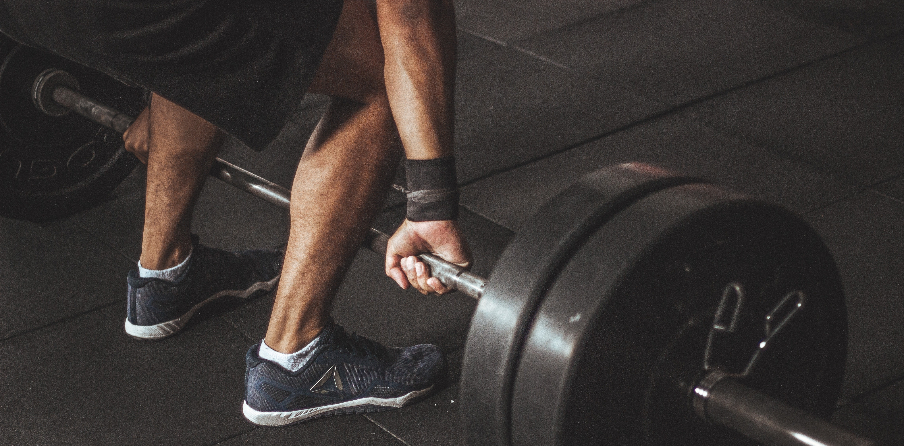

Following the exercises below, you will perform three rounds of each exercise and eight to twelve reps per set; when you can do perform 12 reps, increase the weight. These are dynamic exercises that work more than one muscle group at a time, so you get more bang for your buck.
Push-ups
Perform the push-ups slowly and controlled. Go two seconds down and two seconds back up. After you finish the first set of push-ups, roll onto your back and perform the chest press.
Chest Press
Lay on your back on the floor, pick up the dumbbells, and press towards the ceiling. Perform slow and controlled movements, concentrating on your chest muscles. Rest for two minutes and do the next push-up chest press set.
Squats
Start with your body weight as you dial in your form. After you get used to it, begin to incorporate the dumbbells. Push your butt back as you squat down to keep the pressure off your knees.
Deadlift
Go from set one of the squat directly to deadlifts with weight. Keep control of your body and go slow. Go back and do the other two combo sets after resting for two minutes.
Pull-ups
This is definitely one of the hardest exercises for a beginner, so only perform as many as you can. If you need help, use bands or use a chair to get you to the top of the bar, slowly let yourself down, and then repeat. Go directly to the rows after the first set of push-ups.
rows
If you are using dumbbells, perform bent-over rows. If using bands, perform the rows in a seated position. Maintain slow and controlled movements so you get the most benefit from your effort.
Curls
Use the dumbbells or bands and go slowly. Keep your elbows against your sides and don't use momentum to aid you in your curl. When you finish the first set, move on to the triceps dips right away.
Dips
Perform the dips with your hands behind your back on a chair or bench. Start with your feet on the ground. As you become stronger, place your feet up on another chair to add resistance.
Shoulder Press
You can perform these either seated or standing. Hold the dumbbells at shoulder level and press them high over your head. Perform the same movement if using bands.
Planks
Get into a push-up position on your elbows instead of your hands, keep your body straight and hold the position for 30 seconds for each round. Rest 15 seconds and then perform another rep. Perform five reps.